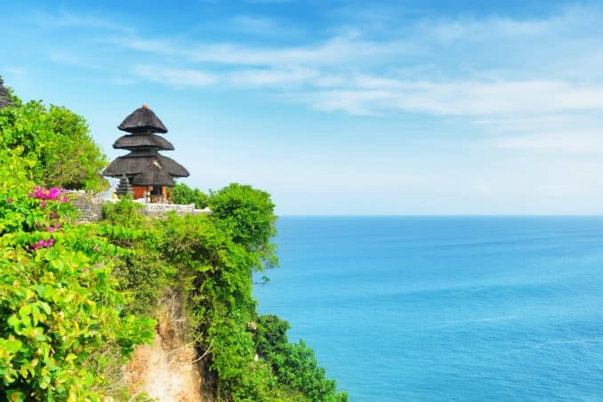
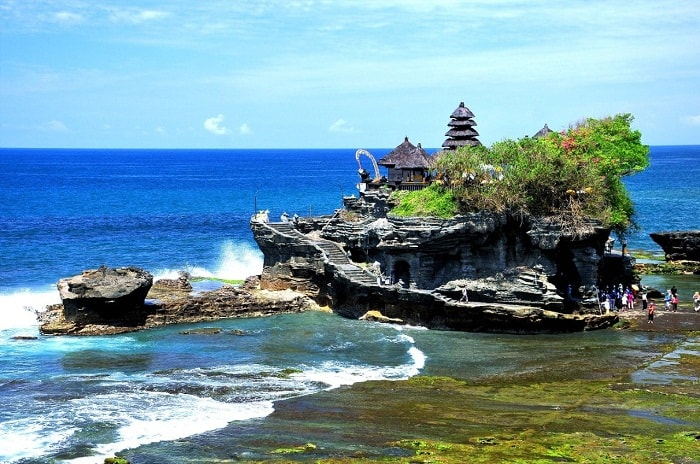
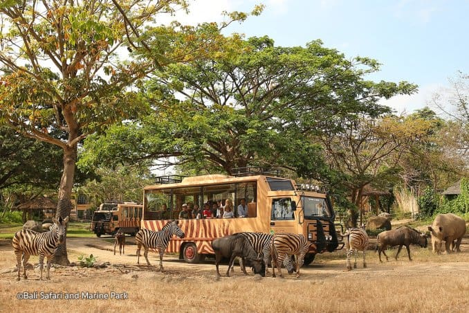

Bali
Bali es una espectacular isla de Indonesia ubicada entre las islas de Java y Lombok con una variedad de
actividades para realizar. Es uno de los destinos turísticos preferidos de europeos y asiáticos de alto
poder adquisitivo.
En Bali, se pueden disfrutar de aventuras y también relajarse por muchos días. Miles de surfistas vienen
de todo el mundo para disfrutar de las playas de Bali.

Miluska: Bali se encuentra rodeada por arrecifes de coral, si pasan por el sur no se pierdan Kuta, Padang Padang y Dreamland que son algunas de las playas más populares para practicar surf y todo tipo de deportes acuáticos.
Templo de Besakih (Este de Bali). También conocido como el “templo de la madre” de Bali, se encuentra en las laderas del Monte Agung, en un alto de 1.000 metros. Besakih es el más grande de todos los templos balineses. Dieciocho santuarios separados pertenecientes a diferentes grupos de castas rodean los tres templos principales dedicados a Shiva, Brahma y Vishnu.
Mercado de Arte de Ubud conocido localmente como ‘Pasar Seni Ubud’, se encuentra frente al Palacio real Puri Saren y está abierto todos los días. Aquí puedes encontrar hermosos pañuelos de seda, camisas livianas, bolsos tejidos a mano, cestas o sombreros; estatuas, cometas y muchos otros productos hechos a mano.
Templo de Tanah Lot (Tabanan) Tabanan Tanah Lot debe ser el templo más emblemático de la isla de Bali. Este templo está encaramado en la cima de una enorme roca y rodeado por el mar con olas que se estrellan constantemente sobre su base. Como entre los templos marinos más importantes de Bali, Tanah Lot rinde homenaje a los espíritus guardianes del mar. El templo sirve de primer plano a los atardeceres más pintorescos.
Goa Gajah (Gianyar): ‘Elephant Cave’ es un sitio arqueológico de gran valor histórico que lo convierte en un lugar especial para visitar. Situado en el borde occidental de Bedulu Village, a seis kilómetros del centro de Ubud, no necesita más de una hora para descender a su patio lleno de reliquias y ver las tallas de la pared rocosa, una cueva meditacional central, piscinas de baño y fuentes.
Bali Safari y Marine Park (Gianyar) Es el parque temático de animales más grande de Bali. El parque alberga más de 60 especies, todas vagando libremente dentro de sus recintos construidos para imitar sus hábitats naturales. Los safaris en autobús llevan a los visitantes de todo el mundo y se realizan espectáculos de talentos de animales con regularidad. Acuarios con especímenes de peces exóticos en las cercanías.
